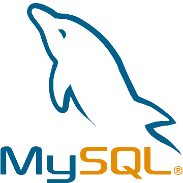
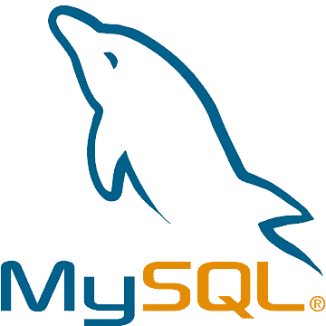
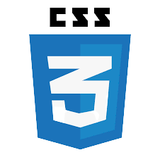
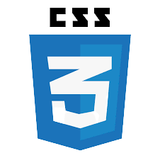
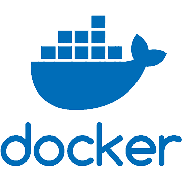
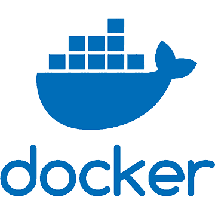

我熟練python的陣列與矩陣numpy、pandas資料處理、matplotlib與seaborn作圖、selenium與BeautifulSoup爬蟲、scikit-learn、TensorFlow、Keras、CNN等機器學習、OpenCV靜動態辨識人臉、顏色等等。
主要的編輯器為Jupyter Notebook或Colab。
我熟練SQL語法基本的四個指令，分別為Select、Insert、Update、Delete，也有利用SQL語法，製作簡單的購物車網頁。
Tableau是我最喜歡也較熟練的視覺化工具，相較於python或PowerBI，Tableau有相當強大的視覺化技術，可以畫出各式各樣美觀又好看的圖表，我有用Tableau練習一些圖表。
php網頁程式的語法，大概是我在學習程式時較大的考驗，因為我是先學了python再學php，所以許多低階的語法都會漏掉或忘記。但在期末還是結合SQL、html、css、JavaScript完成一個令人滿意的購物網站。
由於網頁程式只教php的關係，開始接觸學習許多html的語法，基礎的標籤、網頁間的串連、圖片影片等等。未來我還想繼續學好html，強化自己前端網頁的技術，當網站成果豐富是令人非常有成就感的。
在接觸html的同時，勢必也是要學習一下css，css有大量的設計函數，可以自訂自己的理想網頁。未來我會想繼續研究css，可以做出很多很酷炫的功能，讓網頁更加有設計感。
JavaScript大概是學習前端網頁最大的挑戰，要花費更多時間去學習和研究，功能也是非常的多，像是按鍵修改資料、按鍵換頁等等。是可以回應使用者的互動，讓網頁更加動態化。未來我最想要學習的就是JavaScript，不僅非常實用，還是很加分的技能包。
在學習docker之前，有先學會簡單的Linux語法，像是awk、sed等等，並了解container它的運作模式。接著有用docker做一些實作練習，如 : Hadoop、PIG等等，也對docker有了更深的了解，以及會想接觸更多docker的實際應用。
 


 
 
